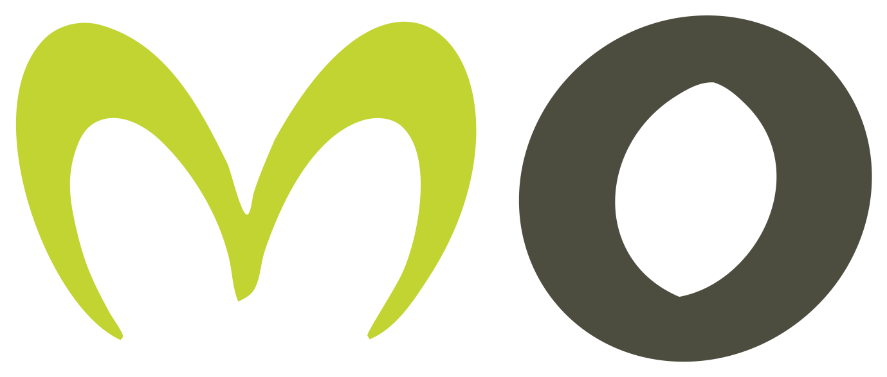

Agente de agenda y citas
Confirma, recuerda y reprograma citas solo. Menos ausencias y menos llamadas.
Ideal para: clínicas, talleres, peluquerías, despachos.
01
Paleta derivada del logo: oliva profundo y lima. El lima es acento, nunca fondo de sección. Sobre fondo claro, el acento en texto es --c-lima-deep.
--c-abyss · --c-ink · --c-olive · --c-lima · --c-lima-deep · --c-lima-soft · --c-paper · --c-white · --c-stone · --c-line · --c-muted · --c-logo-lima · 02
Bricolage Grotesque (500–800) para titulares, con tracking −0,03em. Instrument Sans (400–600) para todo lo demás. Las dos están alojadas en fonts/. Los titulares son fluidos: crecen con la pantalla entre un mínimo y un máximo.
Webs, redes y apps.
Páginas web que venden.
Web con IA y panel de datos
Entrega y soporte
Dos opciones según lo que necesites. Las dos son a medida.
Todo lo que tu negocio necesita para vender online, con un solo equipo detrás.
Texto pequeño para notas.
Casos tipo por sector.
03
Radios generosos y sombras teñidas de oliva, nunca gris neutro. Tarjetas grandes 24 px, pequeñas 16 px, botones e inputs 12 px, chips en píldora.
04
En la web, el logo es un símbolo SVG (#logo-h) definido una vez al principio de cada página. La M siempre es lima; la O y el texto toman el color del texto (currentColor). Los archivos sueltos están en img/logo/.
style="color:var(--c-logo-olive)" o dentro de .nav.is-scrolled. Altura mínima: 24 px.
05
Línea de 2 px, esquinas redondeadas, 24×24. Están como símbolos al principio de cada página. Se usan así: <svg><use href="#i-web"/></svg>. Toman el color del texto y el tamaño del componente que los contiene.
06
Un solo botón principal por bloque: .btn--lima. Altura mínima 48 px (44 px en la cabecera). Todos los botones de venta dicen «Pedir presupuesto»: la web no muestra precios.
.btn-row apila los botones en móvil y los pone en fila desde 640 px. data-whatsapp toma el número de js/config.js.07
El kicker numera los servicios (01 a 04) y abre sus secciones. Los tags diferencian opciones dentro de una tarjeta. La pill solo va en el hero de la home.
08
Se repiten en todas las páginas. Si pasáis la web a un framework, son los primeros candidatos a componente. La cabecera cambia a clara (.is-scrolled) al salir de la sección marcada con data-dark-top. El enlace de la página actual lleva aria-current="page".
[data-menu-open] y se cierra con [data-menu-close], con Escape o al pulsar un enlace. Lo gestiona js/main.js..page-hero__grid--solo. Ejemplo en webs.html.09
Toda sección tiene la misma anatomía: cabecera (.section-head), cuerpo (.section-body) y, si hace falta, pie (.section-foot). Se alterna fondo claro (sin clase) y blanco (.section--white). Oscuro (.sea) como máximo una vez por página, además del hero.
Dos opciones según lo que necesites.
Aquí va el contenido: tarjetas, listas, mini-interfaces…
10
Una tarjeta nunca va vacía de contenido visual: si representa un servicio, lleva su mini-interfaz o su icono con texto. La opción recomendada lleva .card--featured y el botón lima; la otra, .btn--ghost.
Confirma, recuerda y reprograma citas solo. Menos ausencias y menos llamadas.
Ideal para: clínicas, talleres, peluquerías, despachos.
Para construir marca y vender. Estrategia potente, no solo publicar.
?servicio=…: el formulario de contacto aparece con ese servicio ya elegido.Setter de citas
Contacta y cualifica a tus leads y les agenda una reunión contigo.
11
.sea pasa a lima solo.SEO desde el primer día
Estructura, textos y datos preparados para que Google te entienda.
12
Cada servicio se enseña con una pantalla que parece real, no con un icono suelto. Son decorativas: llevan aria-hidden="true". Los números con data-count se animan al aparecer.
.mock-panel--glass. Con tres datos: .mock-panel__stats--3.Ejemplo real de un setter de citas, de principio a fin.
Llega un lead
web, anuncio o DM
El setter escribe
cualifica y propone hora
Cita en tu agenda
confirmada y recordada
13
Tarjeta oscura con sector, negocio, una métrica grande y el servicio que la hizo posible. Los cuatro de la home son casos tipo: se sustituyen por casos reales cuando los haya. La métrica debe ser verificable.
<i> de .ring por <img> redondo de 76 px. data-from="38" hace que el contador baje de 38 a 0.14
Entendemos tu negocio.
Plan cerrado con plazos.
Entregas cada semana.
Funcionando y con soporte.
.steps--3 y sin línea.15
Te damos el plazo exacto en la propuesta, antes de empezar.
Sí. Te explicamos cómo hacerlo.
| Qué incluye | Presencia | Marca |
|---|---|---|
| Reels a la semana | 2 | 2 |
| Publicación y programación | Sí | Sí |
| Estrategia de marca | No | Sí |
16
El formulario valida, bloquea bots con un campo trampa y envía un JSON al destino de js/config.js (formEndpoint). Sin destino, funciona en modo demostración. La casilla de privacidad es obligatoria. El detalle del envío está en la guía.
.sea).data-whatsapp, data-email y data-phone se rellenan desde js/config.js. data-fill además escribe el valor como texto.17
Cierra cada página de servicio. En la home y en contacto lleva el formulario al lado; en el resto, dos botones.
Cuéntanos qué necesitas y te respondemos en menos de 24 horas.
18
Las tres páginas legales usan .prose. Cada dato pendiente va marcado con .dato, que se ve en amarillo para que no se escape ninguno. Antes de publicar: buscar class="dato" en todo el proyecto y que no quede ninguno.
Plantilla. Completa los datos resaltados y borra este aviso.
19
Las animaciones viven en js/animaciones.js (GSAP + ScrollTrigger, en js/vendor/). El contenido es visible sin ellas. Se activan por clase o con estos atributos:
| Atributo o clase | Qué hace | Dónde se usa |
|---|---|---|
.section-head .h2 | El titular sube palabra por palabra; la entradilla aparece desenfocada. | Todas las secciones |
data-anim="lift" | Los hijos se levantan en 3D, escalonados. | Índice de servicios, baldosas |
data-anim="sides" | Tarjetas que entran de los lados; sus checks, barras y contadores se llenan. | Opciones y packs |
data-anim="cases" | Casos que giran en 3D; la métrica cuenta. | Casos |
data-anim="stagger" | Los hijos aparecen uno tras otro. | Características, preguntas, canales |
.reveal | Sube y aparece. Para cualquier bloque suelto. | General |
data-count="87" · data-from | Contador animado. | Mini-interfaces, casos |
data-tilt | Inclinación 3D al pasar el ratón (solo escritorio). | Tarjetas pequeñas, casos |
data-hero | Oculto hasta que arranca la entrada del hero (máx. 3 s). | Hero |
Para desactivarlas: añadir ?static a la URL o activar «reducir movimiento» en el sistema. Para quitarlas del todo: no cargar gsap.min.js, ScrollTrigger.min.js ni animaciones.js.